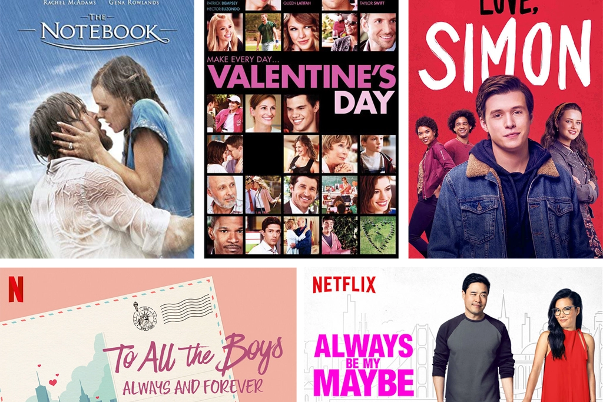

Galentine’s Day Ideas
Feb 14 - Written by Bonnie and Emily
Have you stocked up on your chocolates and flowers yet because it's Valentine's Day!! Or rather Galentine's Day for some of us, the best kind of Valentines Day!
There are so many different things to do and eat, we thought we’d share some of our favorite Galentine’s Day activities you can do with your friends this year. Whether you’re looking for something more hands on or something you can do last minute, we have you covered.
No matter what you choose to do, a Valentines Night isn’t complete without at least one romance movie. Here are some of our recommendations you should check out this year!
To All the Boys: Always and Forever
Valentines Day
Always be My Maybe
Love Simon
The Notebook
Now if a movie isn’t quite your thing, we suggest you grab yourself an apron and head into the kitchen for some virtual baking with your friends. You shouldn’t go a Valentine's Day without a sweet treat, whether that be some store bought chocolates or a creation of your own. We recommend you give some of these recipes a try as they are all equally delicious and festive.
Malted “Forever” Brownies
Chocolate Covered Strawberries
Heart Shaped Cookies
Red Velvet Cupcakes
As you may know by now, we love Claire Saffitz and her cookbook Dessert Person so we had to include one of her recipes. Though if you don’t have her cookbook, any brownie recipe will do or if you’re not the best baker out there and prefer a box mix, our all time favorite brownie mix is the Trader Joe’s Brownie Truffle Baking Mix.
Now if you need more to do than baking or if baking isn’t your cup of tea, there are many other activities you can do virtually with your friends. Here are some options we think you may like.
Painting
DIY Tote Bags
Self Care/Spa Session
This is one of those activities that requires some supplies but with a quick trip to Michaels or your local craft store, you can easily have all the things you need in no time. Now, if you can and want to, you can even grab yourselves a glass of wine and make it a paint and sip kind of night.
If you aren’t looking to paint some canvases, grab yourself some blank tote bags and paint and create something that's both cute and useful. In our opinion, you can never have too many tote bags!
For a carefree and relaxing night in with your friends, put on some comfy pj’s and grab your favorite face masks and nail polishes. If you are in need of some masks recommendations, we suggest checking out the Laneige Water Sleeping Mask or the Glow Recipes Watermelon Glow Mask.
No matter what you choose to do for Valentine’s Day, we hope you surround yourself with the people you love.